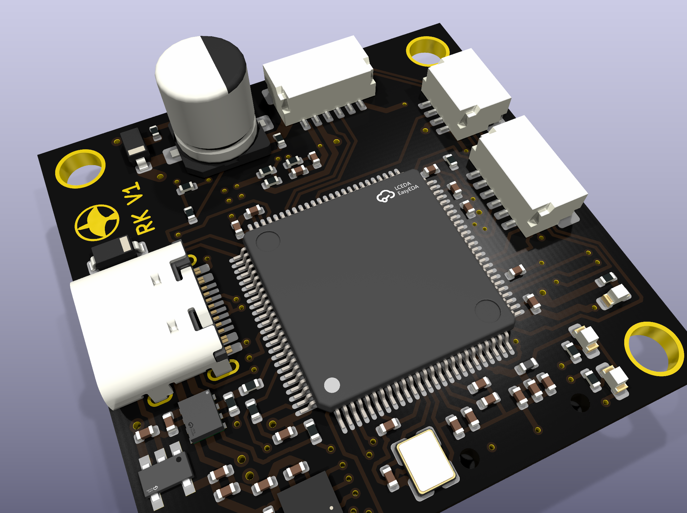
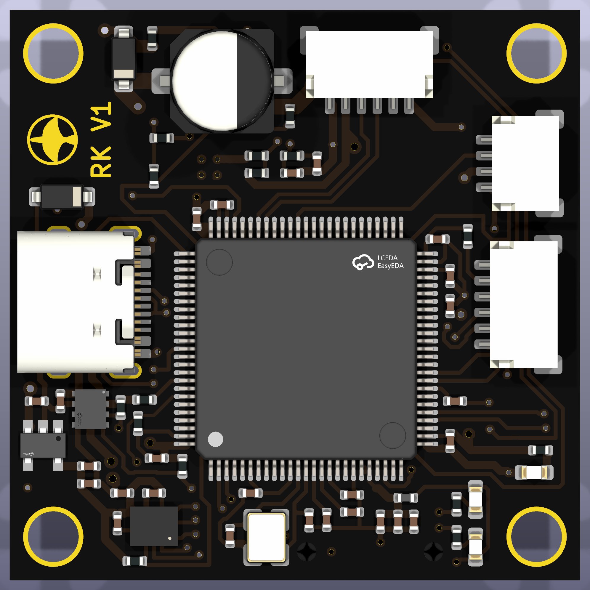
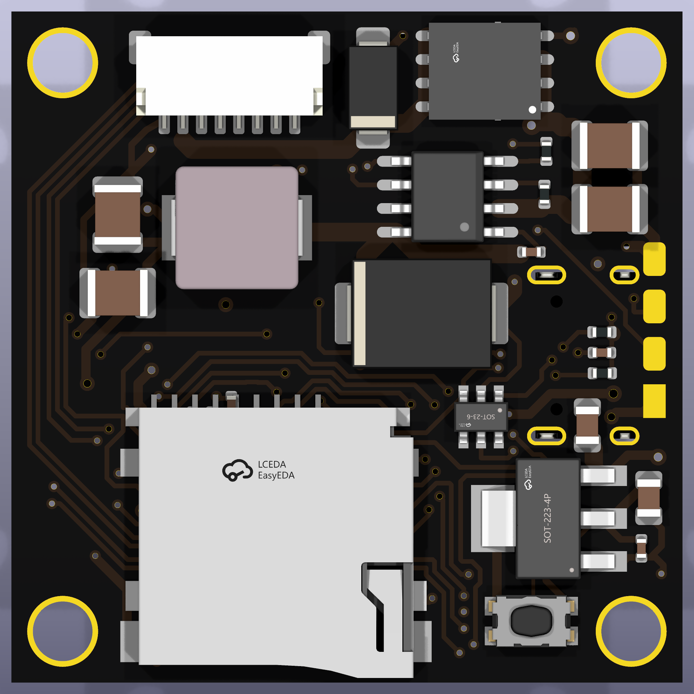
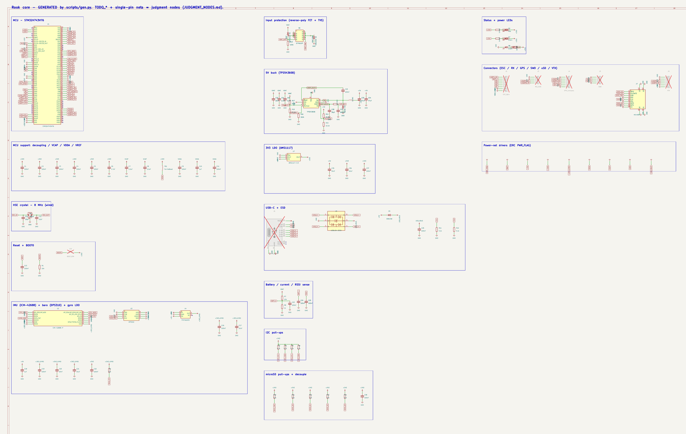

1.Motivation
The other flying projects on this site use commercial flight controllers; Rook is designed from the power tree up. The main constraint on the design is that it follows the pin map of the ArduPilot MatekH743 hwdef. Because of that, existing Betaflight and ArduPilot targets should run on it with little or no change, which gives two known-good firmware references during bring-up and separates board faults from estimator or control faults.
The work is split between scripted and manual steps. The layer stackup, board outline, net classes, schematic generator and fabrication tooling are scripted and repeatable. Footprint verification, component placement, routing, the ground and power pours, and the design decisions the datasheets leave open are done by hand. The pin map is fixed; the rest of the layout is my own.
2.The board
The board is 36×36 mm, four layers, on a standard 30.5×30.5 M3 mounting pattern so that it fits an off-the-shelf 30.5 mm ESC. The layer assignment is L1 signal · L2 solid ground plane · L3 power · L4 signal. An internal ground plane is needed because the ICM-42688-P requires a quiet ground reference on a small board that also carries DShot motor outputs and a switching regulator. The target fabrication is JLCPCB 4-layer with ENIG finish, for the flat pads needed by the 0.5 mm-pitch LQFP-100 and the LGA gyro.


3.The 6S power tree
On a 6S (about 25 V) battery, the inductive spike when the pack is connected can exceed 50 V, which is a common failure mode for low-cost flight controllers. The input stage is designed for this:
- Reverse-polarity P-FET (Si7461DP, 12 V gate clamp) plus an SMAJ33A TVS on the raw battery node. A reversed battery is blocked, and the worst-case connection transient is clamped below 53 V, under the 60 V rating of the FET and the buck converter.
- 5 V from a TPS54360B 60 V / 3.5 A buck (10 µH, SS56 catch diode), rated above the 6S transient envelope rather than a 24–32 V part.
- 3.3 V for the MCU from an AMS1117 LDO off the 5 V rail, kept separate from the gyro's supply.
- 3.3 V for the gyro from a dedicated low-noise TPS7A2033 LDO that supplies only the IMU. Gyro noise depends on supply rejection, so the IMU has its own regulated rail and close decoupling, placed on the opposite side of the board from the power stage and connectors.
4.Schematic as code
The schematic is generated rather than drawn. A Python script
(gen.py) is the source of truth and emits the KiCad
schematic deterministically: each pin is connected to a named global
label, nets are joined by name, and power nets are flagged. MCU pins are
referenced by pin name against the hwdef map rather than by number,
which prevents transcription errors from reassigning a pin. Regenerating
without changes produces an empty git diff, so schematic changes can be
reviewed as text.
The generated core (MCU pin map, gyro / baro / gyro-LDO, USB ESD and USB-C, and the per-subsystem support passives) has zero ERC errors. The resulting board has 88 components across 109 nets, routed on four layers and DRC-clean with full schematic parity (0 violations, 0 unconnected, 0 parity issues on the current spin).

5.Design constraints not covered by DRC
Several requirements for a working flight controller are not checked by DRC or ERC. These were tracked separately:
- RC input stays on USART6 (PC6/PC7), away from the H74x DFU-bootloader UART pins, so a powered receiver or GPS cannot force the board into the bootloader at startup.
- VCAP1 + VCAP2: two 2.2 µF low-ESR capacitors for the H743's internal regulator. Without them the chip does not boot, and no schematic rule check flags their absence.
- ICM-42688-P RESV pins: some are specified in the datasheet as "connect to GND" rather than no-connect. Leaving them floating can cause unreliable operation, and DRC will not detect it.
- SPI1 MOSI is on PD7, not a PA/PB pin. This comes from the hwdef and is easy to change by mistake.
- microSD logging on SDMMC1 (not SPI flash), the logging path ArduPilot expects, on a 4-bit bus.
6.Status and next steps
The schematic and layout are frozen, the board is fully routed, and it passes DRC with schematic parity. It has not been ordered, assembled, or flown. The next steps are a footprint check against every datasheet, a first fabrication and assembly run, bring-up over SWD and USB DFU, and a Betaflight target as the first firmware milestone, before any of my own control code runs on it. A second board, an AM32 4-in-1 ESC of my own design, is planned to pair with it.
Downloads: schematic (PDF) ↗ · netlist (.net) ↗.